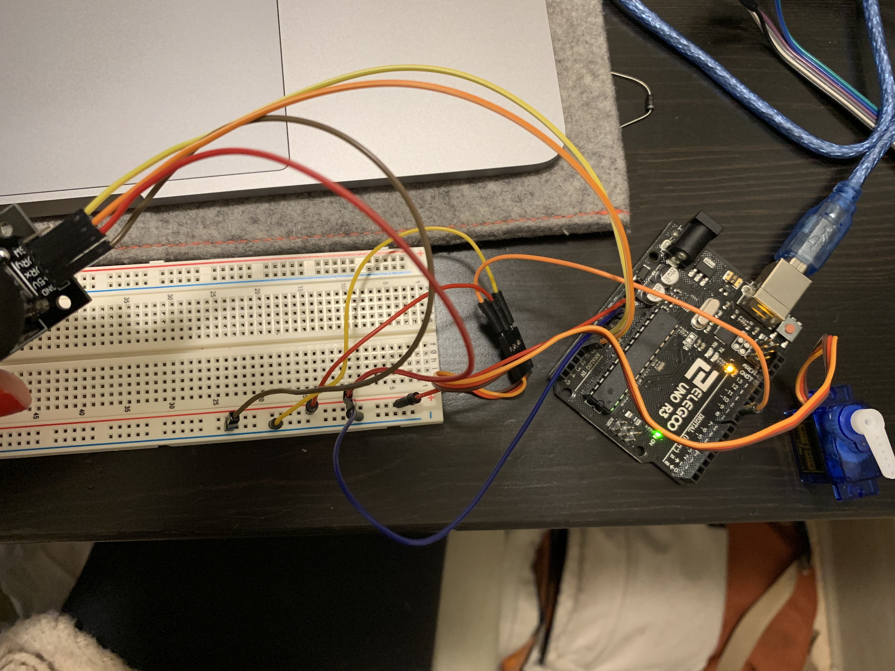
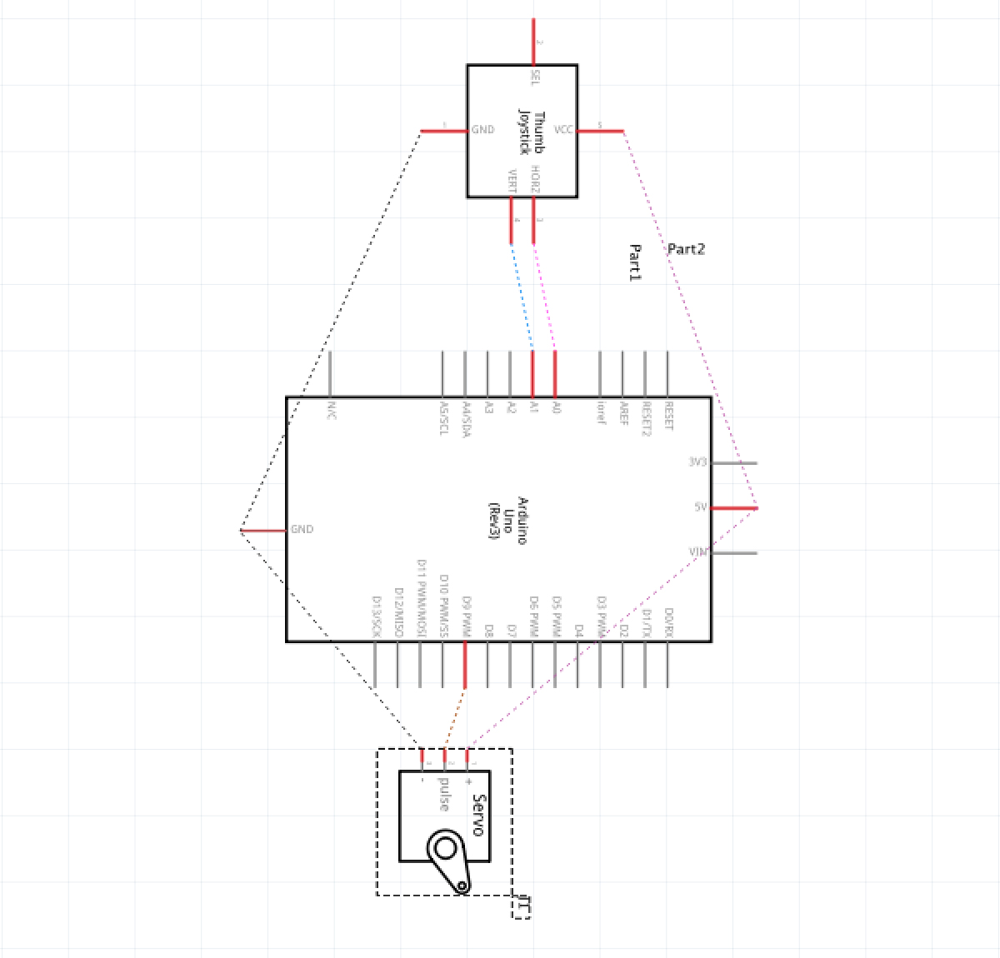
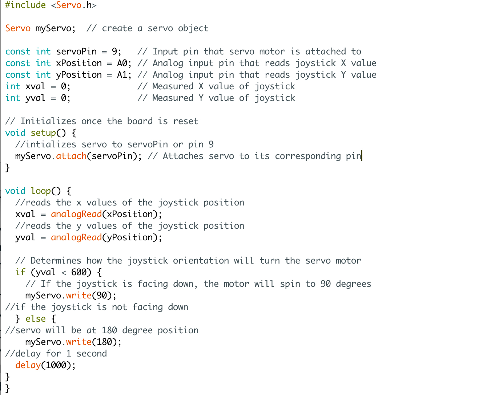

Assignment 5: Motors!

Here is the servo motor moving in conjunction with the joystick!
Circuit
Here is the circuit including a joystick and servo motor. Pin 9 is controlling the servo motor while A1 and A0 are the pins reading the positions of the joystick.
Schematic
The schematic shows both components are connected to 5V and ground while the servo is connected to pin 9 and the x values of the joystick to A1 and y valuse to A0.
Code
The code for this circuit changes the position of the servo motor in degrees depending on the position of the joystick. If the joystick is pointed down the motor will spin to 90 degrees. Any other position the joystick is in will have the motor spin to 180 degrees. See code comments for more details.